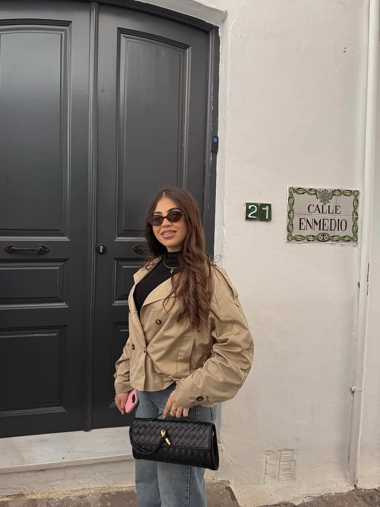
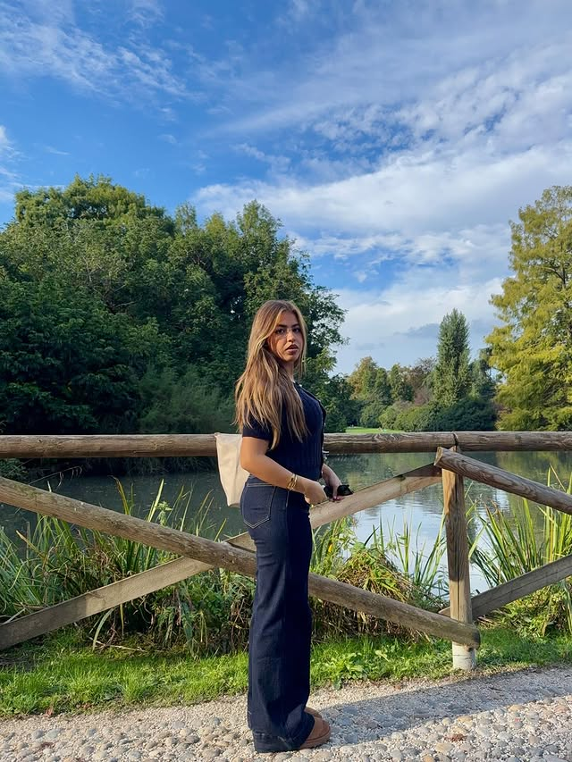
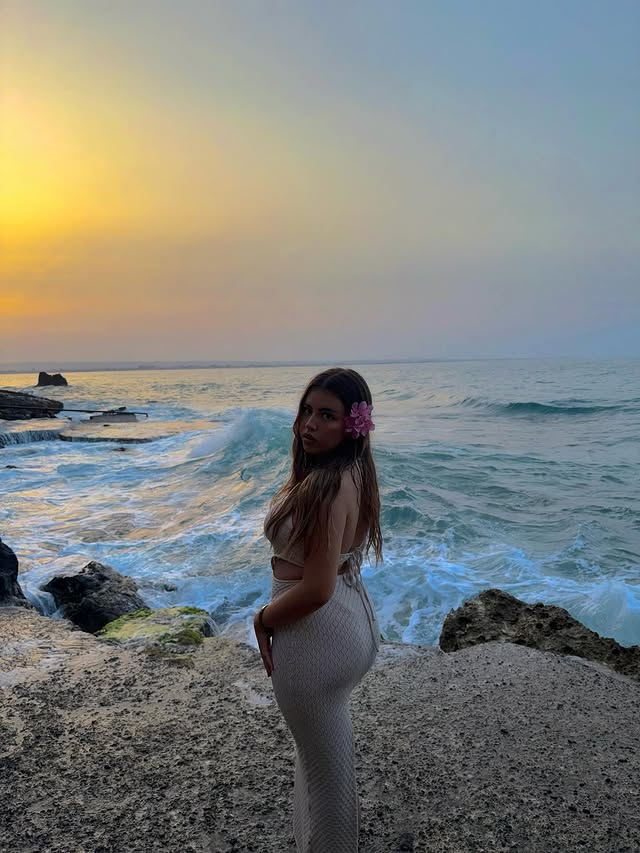
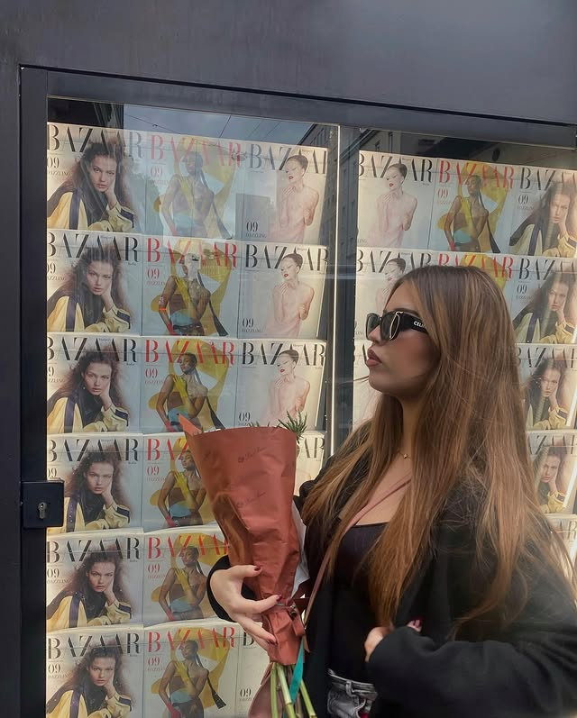

Studentessa di Fashion Design ad ABACT Catania, con la valigia sempre pronta e One Direction nelle cuffiette. Ogni giorno è un outfit, ogni viaggio è una storia.
Mi chiamo Laura, ma tutti mi chiamano Lau. Sono una studentessa di Fashion Design all'ABACT — Accademia di Belle Arti di Catania — e la moda non è solo quello che studio: è il modo in cui vedo il mondo.
Il mio Instagram è la mia finestra sul mondo: outfit del giorno, tramonti sul mare, piazze di Siviglia e angoli nascosti d'Italia. Ogni foto racconta un momento che non volevo lasciarsi scappare.
Cresciuta con Justin Bieber nelle cuffie e One Direction nel cuore — la musica è sempre stata la colonna sonora di ogni giornata.

Oltre i libri di Fashion Design ci sono i viaggi, la musica e quei momenti che finiscono su Instagram perché meritano di essere ricordati.
Studio Fashion Design all'Accademia di Belle Arti di Catania. La moda non è solo estetica — è racconto, identità, cultura. Lo studio ogni giorno.
Cinque ragazzi, milioni di cuori spezzati. Da "What Makes You Beautiful" in poi non sono più stata la stessa. Directioner per sempre, nessuna eccezione.
La mia voce preferita di One Direction, poi anche da solista. Walls, Faith in the Future… la sua musica ha un'autenticità rara.
Che dire — è semplicemente il migliore.
Studio Fashion Design all'Accademia di Belle Arti di Catania — ABACT (abactmoda). Un percorso che unisce creatività, progettazione e cultura della moda in un contesto unico nel sud Italia.
Ogni giorno imparo a guardare l'abbigliamento non solo come estetica, ma come linguaggio. E nel frattempo vivo — tra un progetto e un viaggio.
Seguimi sui
miei social